Archives : 2004-05
多情贱客无情贱 @ May 29, 2004
贱，在字典上有几种解释。。大多数是贬义。。低下。。卑贱。。鄙视。。如贱货。。贱人。。下贱。。。还有一种是表示谦虚。。如贱内。。等等等等。。。贱人。。本来是个骂人的话。。但是就好象你丫你丫一样。。逐渐转变成表示亲昵的称呼。。俺们总是亲切的。。恨铁不成钢的嗔怪着。。你这个贱人。。
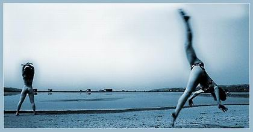
事实上。。贱人们正在以独特的魅力逐渐散发出光彩。。从南方四贱客到王牌大贱谍。。甚至推到伍迪艾伦和蜡笔小新。。那个不是贱嗖嗖的形象咧。。贱客多情。。就必然要被无情恼。。甚至羞辱。。不过。。贱人们的生命力是无穷顽强的。。。一个倒下去。。无数个。。站立起来。。。
给贱下个准确定义是很困难的。。。总的说起来。。就是舍熊掌取鱼的那种。。穿好衣服住好房子吃好东西。。就浑身不自在。。非得粗茶淡饭学人玩悠然见南山。。对他好好说话讲道理就是不行。。一旦大声呵斥就美滋滋的屁颠屁颠的跑来跑去。。明明那么多人都喜欢他。。他非要对牢一个不喜欢他的发骚。。总之。。有点被虐狂的倾向。。喜爱低姿态追求美好事物。。然后又觉得自己配不上。。啊。。太难了太难了。。太广泛笼统的定义了。。或者可以说。。对某事物的承受没有底线。。便可称之为贱。。。

情场上。。贱客们如韭菜。。割了一茬还有一茬。。喜欢上了一个人必定是不大喜欢他的。。为了那人什么令人发指的事情都做得出。。那人干了什么坏事都能得到原谅。。明明知道是一次一次的伤害却无怨无悔飞身上前。。。连人骂人的话都视为天籁之音。。那个人必定是要狠狠打击他的。。就好象虐待狂和被虐狂一样排演得天衣无缝。。。而且。。贱客们还贱人相轻。。如果有人对着自己犯贱。。那么就深深深深的鄙视他。。转过身去又全心全意的对着另外一人去犯。。可以想象。。俩被虐狂在一起是不会有什么前途的。。。
贱客必然多情。。感时花溅泪恨别鸟惊心的那种。。所以又必然敏感。。象风中小草一样摇摆。。对对方的任何细微反应做出激烈回应。。所以。。死得很难看。。但是似乎又很享受。。大多因为情字一字。。如被猪油蒙了心。。有的人会醒过来。。羞愤的想那段日子里俺都干了些什么。。但是有人一辈子也不明白。。惨烈的执着的贱着。。若无情了，，就同学少年都不贱了。。一段完美感情里。。应该是俩人轮流的犯着贱。。也就是传说中的双贱合璧。。。才是最高境界。。。但是。。这个很难。。就如同雄性大猩猩在群里树立了统御地位。。先犯贱的那人。。已经落了后手。。

有人高喊。。贱是一种美德。。是一种闪亮的人格。。这是因为。。一个贱人是很善良的。。有大海一样宽阔的胸怀和天空一般无垠的情操。。他总是能最快的忘掉别人给自己带来的伤害。。同时又无私无所不用其极的对人去好。。这样的人。。很难不激发起别人的兽欲。。。就好象一个温良男子。。结交几任女友都是恶妇一样。。。她们的话说。。一瞧见他。。就觉得不欺负之都说不过去。。很有些野蛮女友的快感。。只是。。大部分人。。心里都有个期限和底线。。一旦抵达。。马上贱客生涯原是梦。。从此翻身做主人。。如果非要加上个日期是一万年的。。。那丫就是个彻彻底底的大贱客了。。
@$^%$&(* @ May 29, 2004
 托好友GRACE从香港带回诺基亚7200手机一部，准备更换偶的那部西门子SL55，手机还没拿到手，另一热心好友已经告诉偶7200的众多缺点·##%……%……￥！……靠！已经被贬的一无是处了？会不会是托儿？偶要的不过是买手机和换手机的快感，早知这样，不如让其帮偶买水货得了！最让偶无言以对的是偶手机没拿到手，偶买这款手机的消息隔了两层楼办公的GGJJDDMM们都晓得了，这真是个信息快速传递和发达的时代！
托好友GRACE从香港带回诺基亚7200手机一部，准备更换偶的那部西门子SL55，手机还没拿到手，另一热心好友已经告诉偶7200的众多缺点·##%……%……￥！……靠！已经被贬的一无是处了？会不会是托儿？偶要的不过是买手机和换手机的快感，早知这样，不如让其帮偶买水货得了！最让偶无言以对的是偶手机没拿到手，偶买这款手机的消息隔了两层楼办公的GGJJDDMM们都晓得了，这真是个信息快速传递和发达的时代！
年初较冷时在东方商城买了件夏天穿的无袖上衣，春天刚过那件已经打了三折出售，靠！！！偶还没穿就打折了？什么狗屁品牌啊？偶痛恨的一踏！这使得偶越发崇敬那些从不打折的商品。
就谈一场丧心病狂的恋爱吧 @ May 28, 2004
对期刊的选择越来越挑剔，跟以前每次抱回来十几本摆得家里跟书报亭一般的初级段位相比，晋升为只看固定的那几本，并且基本把前面的大专题和特别策划都忽略过去，专挑后面设计得希奇古怪的各种心理测试题看。真的很精彩呢——那些测试，答案如何并不关心，爱看的是那些问题，很白痴的事情都可以搞得跟北京白云观算卦的半仙儿似的云山雾罩，看得出那些机智和冷静的头脑对人情世故的调侃与无奈，虽说大部分的测试题看起来实在无厘头得让人恨不得亲亲那个编辑。
这次是拿恋爱中的吵架方式来提问（到底测试的是什么忘了），比如说你和恋人在一周中的哪天（可在周一到周日中任选）吵架？然后你怒火冲天随手拿起（饮料？钱包？枕头？电话？）就向对方砸过去，对方也毫不示弱地回击（杯子？台灯？手机？电视？）……我想了又想，基本上我和男朋友在周一到周日的任何一天都有可能吵架，于是这个选择绕过去，接下来，我发现自己的确属于在两性战争状态下具有攻击性的那方，一般情况下我可能选择向对方扔任何一部手里的电话（我男朋友最多扔一下办公室电话，由此可见他没有我大义凛然），在这些供选择的答案中我依然忍不住要轻轻“鄙视”一下那些饮料钱包枕头—我一个女友总选择在吃饭的时候跟男朋友吵架，她扔的是—火锅！
好了，恋爱这件事，好象问100个人就会有100个人跟你诉说其中战火连天的英勇故事，争执、眼泪、赌气、恶语中伤、全武行，直到演变成背道而驰形同陌路。那种可歌可泣的悲壮呵，似乎下定决心要给所有的浪漫以最波澜壮阔的结局。
我的女友跟我诉苦：我搞不懂为什么我们在一起的时候从不吵架，但只要一分开，这一头飞机还没降落，那一头已经准备好在电话中责备我为什么登机以前不给他打个电话？然后我们居然就这样开始一直吵到决定分手，然后是他跑过来为了分手拿回自己的物品，然后两人竟然也好意思又和好如初，可是直等他一走，老天！一个循环又绝对如假包换地再来一次！
这当然不算什么，另外一对儿，大学时代青梅竹马的偶像级恋人呵，毕业以后大概因为就业和生活的压力而终日吵架，最后劳燕分飞。两年后，大家都混的稍微有点样子了，也都发展出各自的“周末情人”。但终于忘不掉的还是初恋的那一个，前几天见着那个男孩，他说，我真喜欢跟她在一起但也是真的害怕跟她在一起了，那种争吵呵，那种争吵完了以后的伤痛呵，我们都不想再来一次……
在这件事上，我所知道的最NB的情况：两个据说是爱“到了世界上所有森林中的老虎，都溶化变成奶油的程度”的“白痴”。因为想治疗爱情中吵架带来的伤痛，最近决定一年之内中断所有音信，包括更换一个对方不知的住址、电话、QQ以及E-MAIL信箱……一年以后在约好的地方久别重逢，希望那思念的不堪其苦和执手相看泪眼的动人场景能彻底医好吵架的顽疾。
我每次跟男朋友吵完架就跑回家去吃我妈包的饺子，一边吃一边恶狠狠地发誓从此以后再睬那鸟人就撞豆腐死。我妈给我递过来一碟香醋，说，年轻呵……再长大一点就不会吵了。我吃下第10个饺子后想，再长大点我一定要找个老男人做恋人，他那么老奸巨滑那么沉稳豁达他不会跟我吵架他决不肯跟我一般见识的，吧？
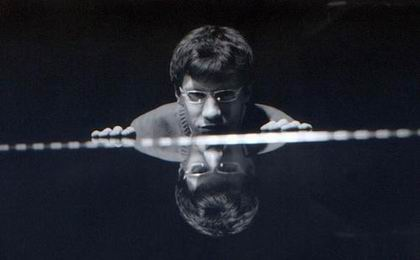
后来我真的认识了很多沉稳豁达的老男人和优雅温和的成功女人，他们真的不吵架，因为他们没有能吵架的爱人。其中有一个看我还不算顽瞑不化，于是好心指教我：等你修炼成在情爱之河上水波不兴的时候，你就明白爱情实在是件无趣无聊的事，没有人会为一些无聊无趣的事情大动干戈……
我赶紧跑去把这话告诉男朋友好让他看清楚我们未来的大好前程，谁知那臭小子一把卡住我脖子说那你还是跟我吵架吧最多你回家多吃几回饺子咱们多花几瓶醋钱……
因为在乎所以不肯妥协，因为在意所以不肯敷衍——我算看透了。
吵吧吵吧，如果世界上有个人专门飞几千公里过来跟你吵架，你还有什么可抱怨？如果连几千公里的距离都没有，就业或者生存的压力也可以暂时放轻一些吧，谁说要功成名就以后才可以谈恋爱？很多成功人士同时谈着几头“爱”也没耽误了名利双收。也不用太把那些诸如一年不见面的誓言太当回事，要是真想念一个人到死去活来的地步的话就直接去找他吧，不会因为你“违约”而承担法律责任的。何况即使真的一年不见也未必不是一件好事，或者会遇见另一个“真命天子”也不好说——毕竟瞎猫还有碰见死耗子的时候。
这世界，如果有个人能让你怒火万丈烽火眼泪的话，还怕跟他/她谈一场丧心病狂的恋爱嘛？
这生活~~ @ May 24, 2004
—”一茶一座”茶餐厅，喜欢其装修的格调，更喜欢食品的口味，办了张一茶一座的消费卡，方便以后去消费


—正洪街广场正在举行”靓丽多”江苏赛区的选拔赛，喜欢看美女的人还是很多的哦
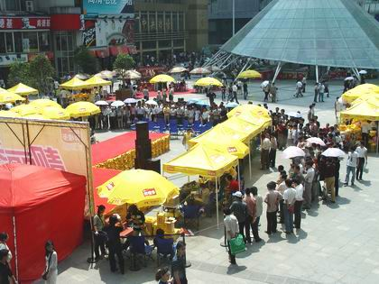

 —东郊绿地，心旷神怡，即使是傍晚
—东郊绿地，心旷神怡，即使是傍晚
 —上好了牌照，开车去东郊不再担心路远
—上好了牌照，开车去东郊不再担心路远
 —我爱这绿地
—我爱这绿地
 —认真钓龙虾的小女孩
—认真钓龙虾的小女孩
 —和妞妞一起奔跑
—和妞妞一起奔跑
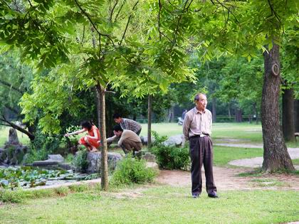
—老人后面的年轻人在河塘里钓龙虾玩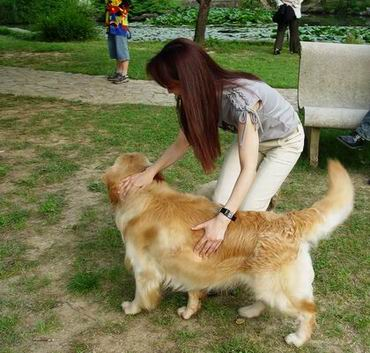
—抚摩一下金毛柔软的毛发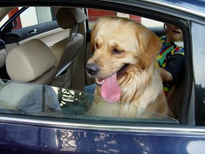
—该回家了，金毛占据了PASSAT一个人的位置。家长介绍金毛有80多斤重，温和而活泼的性格，这和可卡差不多。金毛喜欢游泳，它在狩猎时帮助主人去衔识落入水中的鸟类等动物。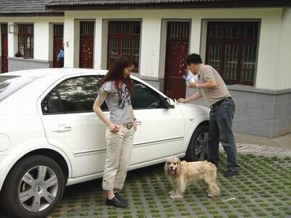
—别把车停在树下面，为什么？试试就知道了，呵呵~~
What a beautiful mind—lynne @ May 23, 2004
你讲个笑话给英国人听，他会笑三次：你讲的时候他一笑——那是礼貌；你解释那个笑话的时候他第二次笑——那也是礼貌；最后，他半夜三更醒来突然大笑起来， 因为他终于懂了笑话的意思。你把同样一个笑话讲给德国人听，他会笑两次：你讲的时候他笑一次——那是礼貌；你解释那个笑话的时候他第二次笑——那也是礼 貌。他不会笑第三次，因为他永远弄不懂笑话的意思。你把同样一个笑话讲给美国人听，他会笑一次——你一讲他就笑了，因为他一听就懂了。可是，你把笑话讲给 犹太人听，他根本不笑。他会说：“那是老掉牙的笑话了，再说，你都讲错了。”中国人有点像犹太人，谦恭有余，激昂不足；苦中幽默，笑里常见皱纹，该是数千 年国运使然。
为一个想法，为一个念头，你可以笑几次，感动几次。经年之后，还惦记着的事就是一定要去做看；经年后还惦记的人是一定要看的，不管好坏。懂得这个道理的时候就告诉自己，想做就一定的作，憋坏了每人负责。晦暗不明想着的男生，在意他人对自己的想法，重于对他个人的想法，所以会在说再见之后还想这会不会有人回头看，大吃排骨后互说再见，我既然想知道就要看个彻底，就径直转身站在那里看定定的看，人的目光总是有热量的，吓得人回头，看见一小傻丫头又倔又傻的站着。再过一点发现，只是不够狠的丫头敌不过韧一点的婆娘，看< 大宅门>时，杨九红搬着小凳坐在男人家门口，于是她得到了。狠狠做女人，不再左思右量，我要是再追一回男人，一定追到尽兴。
原来大叫过，人家女孩子招展如花笑靥的时候，我们在不断的积分算Probability; 猛然醒悟时，发现积到最后积给自己的还是一个人，遇见帅哥的Probability一直是0。坐立要courtesy, 吃饭要courtesy, 走路要端正不跳跃要courtesy, 笑不可以有失courtesy, 可是你们湮没了一个随随便便有很多浅白乐趣的小女生。初中在班里大笑之后，被可爱的老处女老师叫出去，语重深长的教导，女孩子笑成那个样子到不好。。。最后还给我做了个标准微笑的Demo, 看到一丝微笑从她的皱纹中挤出来，我真的有点被伤了，我才不要笑到这样嫁不出去呢。世事原本好笑，我初中毕业后一年，传来新婚的消息，新娘51依然笑容美好。而我却要笑标准笑，做模范生活。妈说世界上不缺一个可以拽情调的小女生，缺平和大气懂得为他人服务的大女人；这个社会本就是kill掉一个又一个无力存在的炼人炉，或早或晚而已，怕的是我们被消除了枝杈，大多只是中规中矩的寻常下去，所以妈，我要用一辈子去做平和大气为人服务。
救梦 @ May 23, 2004
昨晚做了一夜的梦，梦见上苍派了个人来解救我......
早晨醒来后如释重负！

偷偷的进村 @ May 22, 2004
 有一个实验说，给一群孩子各发10颗糖。。是10天的量。。有的孩子一天就恨不得都吃了。。有的就很节制。。真的一天一粒。。根据追踪调查。。很明显后一种比较有出息。。是为主流正派青年也。。
有一个实验说，给一群孩子各发10颗糖。。是10天的量。。有的孩子一天就恨不得都吃了。。有的就很节制。。真的一天一粒。。根据追踪调查。。很明显后一种比较有出息。。是为主流正派青年也。。
这就是说。。对一些美妙事物。。也需要有克制。。但是。。俺们偏偏选择了一条比一较艰辛的路来走。。爱吃红烧肉的。。就使劲的吃。。每天都吃。。直到吃伤为止。。美其名曰。。吃伤了就可以不用再惦记。。其实只不过是缺了一点克制力而已。。其实也是种剜肉补疮的做法。。
这就是所谓做事要做绝。。逼得自己没有退路。。生生断了念想。。所以。。一而再。。再而三的临幸某处。。就是想搞得无趣。。方可不再加以惦念。。或者变成了一个巨大的旧瓶子。。逐渐的不停的注新酒进去。。完全循环更换成不同的内容。。。
所以。。还是上海。。还是乌镇西塘。。还是杭州那滩水。。还是绍兴。。还是宁波。。。关于一个城市的记忆。。多了很多内容以后。。伤感就不再是唯一。。不停揭开伤疤也是为了愈合。。但是。。终有一件事物不会忍心看之无趣。。因此。。。俺默默的潜入。。又将默默的离开。。。在同一座城市天空下呼吸着空气。。试图破译大街小巷中隐秘的成长密码。。。那些陌生又熟悉的口音。。或许脚印曾经在某处重合。。N年前，首都机场曾经上演过错失的美丽。。。现在。。。又重现了。。俺惆怅的微笑。。。然后消停了。。。BTW。。有人说俺。。基本上算个挑剔的人。。对生活。。对人。。对言行。。对衣食住行。。其实俺知道。。。他们是想说俺是个事儿逼。。但是。。偶尔不逼的结果。。就是几个路痴随便在街上找了个饭馆吃饭。。然后。。俺觉得中毒了。。。(转自北京女病人)
丹麦童话 @ May 22, 2004
看丹麦王储迎娶来自澳大利亚最南端姑娘的婚礼直播，神洁的场面散发着北欧的童话色彩。
7年前小王子和有华人血统的香港女子结婚，据说人民接受的理由是她只用了300个小时就掌握了丹麦语。
人总是造梦，并尽力将梦变成现实，有的人或者干脆就生活在梦里，我们把这些人称为病人。(转自乌鸦嘴)
To be or not to be @ May 22, 2004
一天 @ May 22, 2004
昏昏沉沉在家里一天。
傍晚下楼溜狗，地上班驳的留有水滴的痕迹，雨点激起的土腥味犹如新鲜空气一样令人振奋，原来，活着还能闻到这许多可人的气息，看着妞妞笑的摸样，体会着傍晚的松弛氛围，活着不赖啊！
超越现实，但依然不是梦 @ May 21, 2004
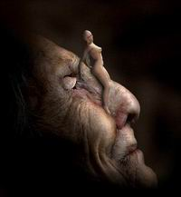
当你发现你离某种感受越来越远，而且那种感受也越来越淡的时候，你浑身开始轻松。无论之前如何禁锢着人们的快乐，轻松即意味着超越！事实上，你并不想超越，好似压抑时尽快捧起书来阅读的方式，那必须是一本以你喜欢的表达方式写出来的书，它可以使你摆脱一切现实社会与自己理想世界相斗争相妥协的令人窒息的状况！
你知道你经历了之前最糟糕的遭遇之后，你变得聪明而玩世不恭，前者有助于你判断，后者有助于自我保护！可现在还能保护些什么?
无题 @ May 18, 2004
大概只有看喜欢的文学书才能使自己这只氢汽球有被牵引的感觉......这世上我想不通的事情多着呢，想不通何必去想？这世道已经如此，要其改变根本就是天方夜潭，何苦拿别人的问题惩罚自己？还包括放弃那些看似美好实则虚空的事物。
每天早晨半梦半醒时考虑最多的问题是：今天能不能不去上班及今天上班会不会迟到?HANK说我现在是过小日子的女人，我说我羡慕他还有那么多可选择的机会去世界各地遨游，这是否全面的概括了围城理论？我一直等着和JIAIJALING他们去西藏，他们最早回国也要到下半年年底了，我愿意等，因为他们不会让我的等待最终遥遥无期。
晚上他和两个好朋友吃了晚饭一起回来坐坐。妞妞最近很害怕电视柜上坐着的一只毛绒玩具猪，见着它都绕道走。我们告诉他们这个秘密后，毛绒猪成了今晚逗妞妞的主要道具。另外妞妞特喜欢躺沙发，把毛绒猪放沙发上后可以防止她上沙发。
22：30分给妞妞洗澡吹风后，我们仨儿又来到车库坐进车里听音乐，妞妞坐我腿上特安静。当时放的迪克牛仔新专辑《本色》里的那首“死心塌地”。
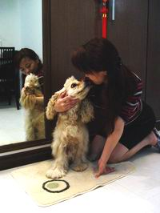
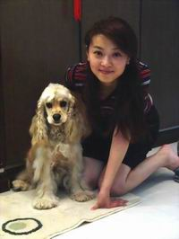
真实生活笑话二则 @ May 14, 2004
一、”男人”的疼痛
BESS去商店给母亲买母亲节礼物—理疗仪。
BESS拿起一支温度计，想着这个东西不错，给丸子买了。销售小姐大吓一声：“这是给女人用的，不是给小孩用的。”
BESS问：“什么叫给女人用的？”
小姐称：“测量排卵期的温度计。”
BESS无语。
这时，三位年轻男士走上前询问小姐理疗仪，问：“这是干什么用的？”
小姐大声回答到：“这是治疗‘男人’疼痛用的。”
三男士顿时满面通红，怯生生继续问：“这个东西难道女人就不能用吗？什么是男人的疼痛啊？”
小姐随即大吼道：“是难忍的疼痛，不是男人的疼痛......”
二、洗照片免费
小汤帮BESS洗照片回来，BESS问多少钱啊？
小汤说没给钱。
BESS说那怎么可能呢？你究竟怎么说的？
小汤说：“有美女给你看，还要钱啊？！”
《彭希曦语录》 @ May 13, 2004
1．我想把我的一生浓缩成一句笑话。
2．不要随便跟人打招呼。没有人认识你。
3．音乐响起的时候，谁能扶持我不瘫痪在地？
4．每赚到一笔小钱，我都觉得又有人想收买我，想让我开口说恭维话。
5．世上有这么多的屁股，我怎能不丢人现眼？
6．我不再要求公平。我不敢，也不好意思要了。
7．我天生怕痒；你明白我的意思，咱俩的关系挺敏感的。
8．蠢材们最恨你对他们的功成名就无动于衷。
9． 我的嘴从未战胜过任何人。我至今仍然相当羞愧。
10．我都被生活折磨成这样儿了，他们居然还问我过得怎么样，这些个不识相的狗杂种！
11．名女人们大都做过孤身穿越森林的梦；那是由无数鸡巴竖起的一片森林。
12．我可能天生是个他妈悲剧人物。我宁愿做个小丑。天哪，我以前可是胸怀大志的呀！
13．捡破烂的兄弟，你为什么瞧不起我，你为什么不把我塞进你的垃圾袋？
14．我从来都是个无业游民，孤独和发笑是我的事业。
15．贱货，你出价也太高了吧？
16．我尊敬过很多人，他们早已被我蔑视得无影无踪了；我爱过的两三个人，至今还被我爱在心里。
17．悍妇破口大骂的时候，我们忍受的是一个死要面子的痰盂。
18．雪花在冬夜凝成冰块，小姐向老板敞开胸怀。
19．如果，天空，只有，一滴雨，落下来，它会巴结谁？
20．人生在世嘛，不过是个面子上的事儿。我只想不要脸。
21．文学是一项可笑的事业。我说什么也得克制自己，尽量保持招人喜爱的微笑。
22．妈妈在隔壁屋里，天堂在我这屋。
23．你走的时候，没有人为你送行；这意味着没有人希望你再回来，没有人愿意再见到你。这么简单的事儿，你干吗老装作不明白呢？
24． 趁着我现在还无权无势，赶紧巴结我吧，我将来绝不会瞧不起你的。
25．我爱胸脯美满的女人，可那到底该是多大的尺寸，我是永远弄不明白的。我不知道的事儿还多着呢！
26．……而春天，从来就没降临过。我浑身上下全是种子，都快枯死了。
27．离开妈妈以后，喂养我的是这些长得不好的乡下丫头。
28．我要萝卜炒白菜，大厨大厨你别发呆。
29．拉尿是我日常生活中唯一的乐子，你不会再问我为什么酗上了啤酒吧？
30．这世上有这么多的穷人，我怎么好意思不去追求财富？
31．等我练好一口满嘴流油的北京腔，我再爆炒几盘老爷子和一大锅丫头片子。
32．一个羊毛毯可以温暖一个孤儿寂寞的长夜，也可以包庇一对狗男女臭汗淋漓的奸情。
33．我绝不反对你，也绝不同意你。
34．镇静点儿，别怕死，那可都是些只想要你命的歹徒啊！
35．没有连续性。但还不得不继续下去。这就是所谓的后现代生活。
36．编辑老爷，我要喝下两个扎啤，才能写出一个句子，你说句公道话，这稿费怎么算
37．我失败得还不够彻底，这弄得我跟个骗子似的。
38．在凌晨两点的五道口大排挡，我看见了一位迪斯科酒吧（我一度常去那儿）的前台经理，他走向厕所时的背影，让我顿时明白了一个杂种的全部内涵。
39．在这个随便上床的时代，我守身如玉，随时准备歌唱爱情。怪不好意思的。
40．我独自偷笑的时候，不巧被人偷看了，弄得我挺难为情的。这是生活中每个人都会遇到的破事儿。可我还是挺难为情的。
41．这附近两条街的地痞同样富有尊严，谁都瞧不上谁，他们火并过几次，一致同意还是握手言和，结成死党。我每次看见他们招摇过市，为非作歹，总是倾羡不已。天哪，我什么时候能成为我自己的盟友啊！
42．有位面相大师对我说：小伙子啊，别愁眉苦脸了，耐心地等着吧，你晚年必定德高望重。我回屋反反复复照镜子，越看越觉得他说得有道理。
43．我有两个女儿，一个善良美好，一个爱慕虚荣，我不想把她们许配给任何人。
44．别搭理他们，也别让他们来搭理你。
45．一有人尊敬我，我就开始怀疑人类的尊严。
46．我们在手淫时呼唤的，不一定全是坏女人。
47．我活着是对生活的嘲笑，我写作是对文学的嘲笑。
48．还愣着干吗，坐在屋里也是要花钱的！
49．我老去酒吧干吗？去反复验证我到底有他妈多孤独？
50．爱情？你说的可是男男女女在一起宽衣解带的那类破事儿？
51．一个杂种，一个一心只想让你尊敬他的杂种，你该郑重其事地蔑视他，尽管这有点儿麻烦，但绝不会多此一举。
52．妈妈在哪儿，家就在哪儿，我就去哪儿过年。
53． 我昨晚去了Moon House酒吧，今晚我还想去，于是我就去了。
54． 我数好钱，放在桌上，等着我的房东。她说五点钟来的，都六点半了，怎么还不来？这懒婆娘！
55 .在我的祖国，连老外也把我看作老外。
56 .你不妨装着去爱这个世界，这个世界将会以无数倍的爱回报你的，尽管那种爱也真不到哪儿去，但足以让你全身心感觉良好。
57．同白纸搏斗，犹如和女人在床上肉搏。
花自飘零水自流 @ May 12, 2004
偶家电视现在能收到79个台了，可喜可贺！
昨天提了新车，放在车行为玻璃们贴膜，要NND3000多元，“花钱如流水”估计要从这车开始了。要花钱能买到快乐多好？北京女病人讲要让一个人快乐，一是给TA钱，二是给TA异性……
妈的，在这个时候偶连捅死你的心都有，有枪偶都不用，而且要从你的嘴开始一刀一刀地划！！！

有人今天说了句励志的话：人格分裂有助于保护自己不至于崩溃！妙！偶不人格分裂，也是走投无路，你最好保佑偶人格分裂，这样偶就不会在走投无路之前干掉你。
据说科学研究表明忠于一个女人的男人属于精神病的一种，忠于一个男人的女人属于偏执狂。
一个杂种，一个一心只想让你尊敬他的杂种，你该郑重其事地蔑视他，尽管这有点儿麻烦，但绝不会多此一举。蠢材们最恨你对他们的功成名就无动于衷。偶的周围倒也有几个这样的蠢材，但未必功成名就！
有个女人曾经说过她觉得最幸福的死法是在70岁的时候被两个争风吃醋的男人从背后开枪打死。这就跟男人说这个女人适合做太太，那个女人适合做情人一样是 他妈的屁话。
你摇头晃屁股从偶眼前消失的摸样就跟TMD响尾蛇一样。

爱情？你说的可是男男女女在一起宽衣解带的那类破事儿？
今天听说木子美有了一个新的同居男友，在母亲节的前几天。真为她高兴。
昨晚刘义伟花了7、8十元研究了一下中国吻史：
七十年代管吻叫“那个”；
八十年代管吻叫“亲亲”；
九十年代管吻叫“波一下”；
现在叫什么？
偶更喜欢“吃嘴儿”这个词儿，因为够让人意淫好一阵子的了。还能把嘴给嚼烂喽，再吐出去，就象《坦塔尼克号》的ROSE和JACK吐吐沫那样。
偶真TMD想彻底变态，这样偶就会有享受的感觉……
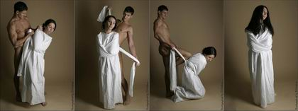
红藕香残玉簟秋。
轻解罗裳，独上兰舟。
云中谁寄锦书来？
雁字回时，月满西楼。
花自飘零水自流。
一种相思，两处闲愁。
此情无计可消除，
才下眉头，却上心头。
跳舞的女人 @ May 10, 2004

何时我的身材才能臃肿起来？可我觉得自己还是个孩子，多么可笑的感觉？我怎么还能是个孩子，一个需要照顾的孩子？要身边的男人对待我象对待孩子一样。边走路边想着这个问题，那时不再有任何男人关注于我的外在，不再有任何外在的吸引而掩盖了内心，因为外在的臃肿和丑陋在被人思考时能忽略所有的虚华。体态臃肿之后首先变化的是心理，我那脆弱的不堪一击的心理，非常异常十二分格外脆弱的心理。
晚上办公室同事聚会来着，这不是我们办公室第一次聚会了，气氛依然是热闹，还邀请了别的办公室的人来参加。深夜返回的路上，听着周杰伦的《东风破》，让司机开到最大声音，这首歌让我想起写意大利游记那段记忆......吹着窗外的小风，橘色的灯光，橘色的大街，橘色灯光油彩般涂抹在我的头发、上了睫毛膏的睫毛上，温和的让人糊涂又让人清醒。希望能再多些酒，再醉些，醉到可以......可以写这篇文字时好似打醉拳的状态，再醉些，醉到能一下子蒙了能倒头入睡。好多次我都蒙了，有意无意的，就那么蒙了，愉快非愉快的就那么蒙了，一下子倒下去，睡着了好象没有这个人存在似的......
四月已过，浑浑噩噩过了两年。好似跳云南少数民族竹杠舞的女人，被速度极快的竹杠夹住脚，来不及疼痛还得接着跳啊跳的，而自己已青春不在，体力也跟不上，不跟上节奏双脚就得被竹杠不断夹住，疼吧，痛吧，自己退出吧，跟不上节奏，没有人心疼你，而我不需要同情，被人同情不如被人捅一刀痛快，同情是多么可悲的施舍和怜悯？！
我已成碎片，和这社会上人格分裂的人们肩并肩，肩撞肩地生活在一起。分裂的，碎片。最终都将烟飞灰灭。这多么让人感到无奈和落寞？只因我无法跟上这节奏，无法适应这节奏，所以分裂，分裂我自己，灵与肉，爱与痛，快乐与不快乐，终点与起点，性与爱......还得分裂着记忆之前的记忆，那些嘴脸，那些路过我人生的长袖飞舞的男人和各种不讨厌的女人，那些碌碌无为的浑浑噩噩地醉酒后的片段。谁能告诉我怎样才是不碌碌无为？不浑浑噩噩呢？用什么来衡量？我看见一丝狡劫地微笑迅速爬上你的嘴角，这让人发疯的憎恨的表情，在这表情里我愿是个体态臃肿的、有着世俗的取舍的妇人，圆滑的势利的妇人、撇着嘴攀比的妇人，一个身材臃肿人格分裂的妇人，和你，和他，和她还有他们，一样！在酒醉后的夜晚这个可以臃肿起来的妇人还能胡言乱语几句，给自己日后的日后留下些鄙夷的纪念！
所有的一切一切，只因为，我，还能感觉得到...疼痛......
不下雨了~~ @ May 09, 2004
 今天是母亲节，想着给妈妈送个什么礼物？
今天是母亲节，想着给妈妈送个什么礼物？
昨天晚上回到家，掏钥匙开门的时候想着一定可以听见妞妞在门内唧唧哼哼的叫声，结果打开门一看，几个白色泡沫条散落在地上，唤了几声“妞妞”没听见她的回应，四处寻找，推开卫生间门她从里面摇着尾巴跑出来，上次她把自己关在小房间里，这次又把自己关在卫生间，再一看卫生间里散落着拖把、毛巾、洗发水瓶子、换下来的衣服、卫生纸......
在这个问题出来前我还向同事老刘夸奖妞妞即使独自呆在家里也不会四处捣乱，晚上回家就发生了这件事。这是她第一次犯错误，我拿起毛巾上去就抽了她几下，妞妞见状匍匐在地板上，连眼睛都不敢与我对视。一直到吃过晚饭看完电视，她都很老实的趴在属于她的垫子上，见我拿了她用的大浴巾铺在沙发上时，她才讨好的把头先放在我腿上，然后后腿试探性的往沙发上悄悄地爬，爬上来之后却把后腿搭在DAVID身上，头靠在我腿上，嗲得象个小女孩！（一般情况下她是直接跳上沙发的。）
早晨出门站在路边等车，回头看自己家的落地窗户，看见DAVID和妞妞站在窗户后面看着我，心里涌上一股暖流，我用手机打过去问他：“妞妞怎么也在那里？”
“妞妞看见我站在窗户这里往外看，也跑过来看。”他回答道。
“她能看见我吗？”我问。
“我认为她能看见你......”
笨人 @ May 08, 2004
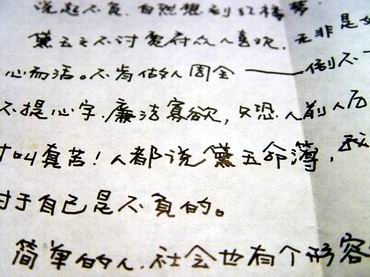
偶尔从书架上抽出一本散文书，发现里面夹着自己10年前抄写着下面这段文字的小纸条，连钢笔字体和我现在的都是不一样的风格，过去的字体更象有韧性的绘画:说起不负，自然想到红楼梦。
黛玉之不讨众人喜欢，无非是她为了坚持自己的心而活。不肯做人周全—倒不一定是不会。宝钗从来不提心字，廉洁寡欲，只恐人前人后失了照应—这颗心才叫真苦！人都说黛玉命薄，我却不如此看法，起码对于自己是不负的。
简单的人，社会也有个形容词，说他们是笨的。一切单纯的东西都成了不好的！
这里，对于简单的笨人，是合适的。对于不简单的笨人，却不好了。
我烧的菜~~ @ May 07, 2004

-这套漂亮且手感好的骨质瓷餐具令人“秀色可餐”
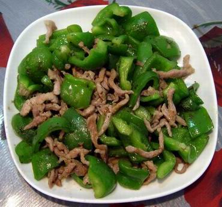


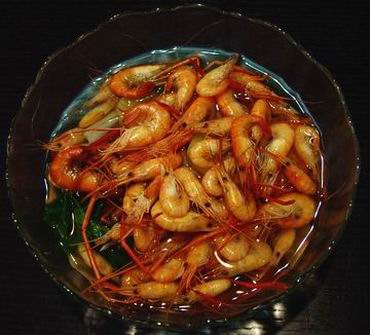
-盐水河虾
-鳗鱼汤（昨晚烧的,无图片，他说和饭店烧的口味一样了）
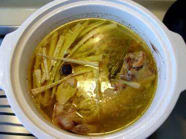
下午炖了鲜笋鸡汤，晚餐吃

今年第一次他买的樱桃
~~ @ May 06, 2004
昨天回到南京，有些累，但仍然是愉快的！
天气又开始变热，短袖衫穿上身了。中午乘车和DAVID去吃味千拉面，饭后在进香河附近的林荫道上手拉手散步，闻着温暖而清新的空气，有些惬意！
洗了两百多张数码照片，花去银子RMB360.00，明天取，希望不比光学相机拍出来的效果逊色。
之后去了大明路上的“福联”，四月的最后一天福联的销售员通知我们去提那辆好不容易运到南京的白色Mondeo，当时我们挺高兴的告诉家人和好友，因为到目前我们都没拿到驾照，所以还计划好回到南京后让谁帮我们把车开回家停在车库里。结果，福联又打电话说那辆白色Mondeo是没有天窗的经典型，不是尊贵型，仍然需要耐心等待几天，好事多磨？
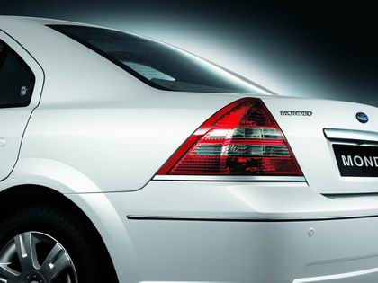
尾灯模仿奔驰S320，看见欧洲大街上Mondeo的尾灯里的线条状灯是圆型的，除此之外没太多的不同。报价在EUR22750.00/辆。
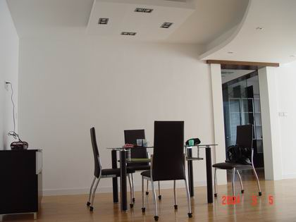
—姐姐的新居(更多图片)
I try – macy gray @ May 04, 2004
games, changes and fears
when will they go from here
when will they stop
i belive that fate has brought us here
and we should be together babe
but we’re not
i play it off, but i’m dreaming of you
and i’ll try to keep my cool, but i’m feenin’
i try to say goodbye and i choke
try to walk away and i stumble
though i try to hide it, it’s clear

女皇之城（一） @ May 01, 2004
写完意大利的游记之后，突然缺乏热情继续写最后一站哥本哈根。总有心事未了之感，所以还是得写完它。
在米兰购买了两张前往丹麦哥本哈根的机票，RMB4800一张，是我们所持联票价格的一半还多。联票包括：上海—法兰克福—巴黎，哥本哈根—法兰克福—上海，每张联票价格为RMB9000。在米兰机场办理了登记手续，发现乘客清一色是穿着厚实的西方人面孔，到丹麦的外国人果然很少。MD-87航空飞机，据说此型号飞机出事率相对比较高一些，飞机不是很大，两排座位，缺乏安全感。
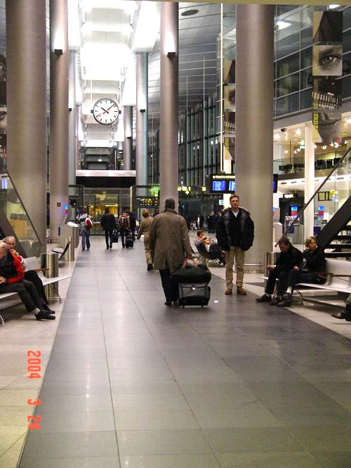
—哥本哈根机场出了哥本哈根机场，仿佛掉进冰窟窿里似的，特别冷。叫了辆出租车到朋友帮忙预订的STRAND酒店，司机是个黑人，一路上播放着有关中国的英语新闻，当时还暗地里赞叹司机细心。到了酒店，我们掏出朋友给我们的200丹麦克郎，本打算再付几个欧元支付车费，结果司机说要么都用丹麦克郎，要么都用欧元。他希望我们用欧元支付，这样他可以从中赚些差价，结果我们掏出最后一张一百元丹麦克郎，这多少令他感到意外，他一定以为我们没有丹麦克郎了。事实上，这300元丹麦克郎还是出国前朋友给的，想着我们刚到丹麦一定没时间换MONEY，给些零用钱备急。下车后，那个黑人司机再无我们上车时的热情，连行李都让我们自己从车上拿下来。这个势利的男人，呵呵~~

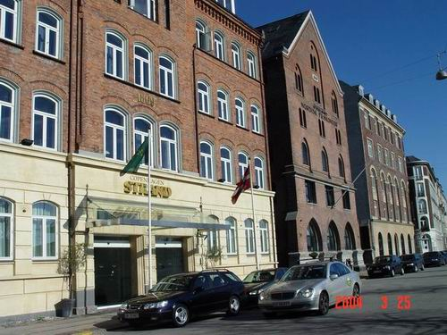
~~-我们居住在海港附近的STRAND酒店~~


哥本哈根 (Copenhagen, Koebenhavn) 是北欧最大的城市，原意为“商人港口”，有自由港和航空港，是世界交通的枢纽。由于统治欧洲时间最久的皇族玛格丽特女皇二世皇族居住于此，因此，它还有一个别称-“女皇之城”。据出租汽车司机介绍哥本哈根人口150万。这个城市因丰富的艺术与文化本质而在1996年被评为欧洲文化之都。丹麦是世界上社会福利最好的国家之一，国民获得国家多项福利，丹麦人的平均寿命很长。听当地人介绍，如果丹麦人这个月失业了，那么政府将支付其上个月薪水的80%，直到其找到工作为止。当地年轻人每月收入USD5000还嫌薪水低。在丹麦退休金，上至首相，下至平民百姓，街头店员它的退休金一律是平等的。
早期丹麦政府的移民政策尚算宽松，一些中东、印度、巴基斯坦人移民到丹麦，每生一个孩子丹麦政府就补贴若干美圆，后来报纸上报道一个非洲母亲生了7、8个孩子，每年光是拿补贴就能拿到20万美圆左右，然后她把这些钱寄回故乡，在当地也是富裕的家庭了。这件事情被报道后，使得丹麦民众异常气愤，移民政策随之严格起来。3月25日晚上在一家巴基斯坦餐厅用餐，价格异常便宜，但是我很不习惯那种口味。餐厅的主人也是早期移民过来的外国人。丹麦人对中国人的印象相对还行。
 —知道那天有多冷吗？我穿上了几乎所有挡风保暖的衣服，即使戴着手套手指也冻的疼。美人鱼铜像。
—知道那天有多冷吗？我穿上了几乎所有挡风保暖的衣服，即使戴着手套手指也冻的疼。美人鱼铜像。
丹麦的国鸟是白天鹅，过去却是丹麦鹤。丹麦人视此鸟为仙鸟，说婴儿便是由它们衔到人间的。不知从何时起，也不知何故，丹麦鹤的数量骤然减少了。现在，日德兰半岛有个小城市，是丹麦鹤唯一出入的地方。每年春暖花开时节，城里居民都要在自家的房顶上修搭木架，以方便仙鸟筑巢孵蛋。当仙鸟归来时，全国各地有不少人专程赶去，和当地居民一起，像对凯旋的勇士一样加以欢迎。丹麦的交通信号灯一般要比其他国家多两个装置，一是专管公共汽车的横竖道信号灯；二是专管自行车的小型红绿灯。按照交通规则，在路口，公共汽车和自行车享有先行权，其他车辆必须礼让，否则就是违反交通规则。据２００１年的统计，丹麦家庭上网过半。在丹麦，狗要纳税，但离奇的是税的多少取决于狗的高矮。所以，在丹麦，狗都是长长的，矮矮的。

在丹麦，琥珀是最美的东西。在南京金鹰购物中心有家专柜出售的琥珀和我在丹麦看见的那些琥珀差不多，但款式明显不如丹麦多。作为琥珀的发祥地，丹麦人开辟了世界历史上有名的琥珀贸易之路，丹麦人骄傲地称之为“琥珀之路”。据丹麦琥珀屋的资料记载，“琥珀之路”从丹麦北部的日德兰半岛，经由波罗的海口岸，可一直到达地中海、波斯、印度、中国和更远的地方。据说古代西方人向中国皇帝赠送的礼品就是琥珀。

丹麦是人均使用蜡烛最多的国家，夜幕降临，当你在丹麦的小巷里徜徉，你会发现，一幢幢别墅、公寓的窗台上烛光点点。透过窗户（丹麦人一般不挡窗帘），你会欣赏到男女主人对饮咖啡，窃窃私语的情景。丹麦蜡烛色彩斑斓，千姿百态，并有三个特点：一是不流泪，再富想像力的文人在丹麦也写不出“蜡烛有心还惜别，替人垂泪到天明”的诗句；二是不冒烟，人们在烛光下不会有烟薰火燎的感觉；三是可燃时间长，每一种蜡烛上都标有可燃时间。丹麦人引以为豪的是丹麦人均蜡烛销量居世界第一，其含义不仅仅是蜡烛给丹麦漫长的冬夜带来了光明，它体现的更多是一种生活情调、一种心理素质、一种人生境界。

 —在哥本哈根的咖啡馆里
—在哥本哈根的咖啡馆里
丹麦人确实有一部分受气候影响得了抑郁症，有什么办法来缓和呢？就是在各个社区或者健身房都设有专门的仿照太阳光谱的仪器，像个汉堡包似的，人就躺进去，每天躺在里面晒几个小时。由于冬天特别漫长，北欧人也想出一些办法改变这种现状，一个是北欧所有的房子都窗户特别多，而且都特别醒目，可以更多的吸收自然光，第二个就是家里特别注重蜡烛，不管什么场合都要点上一根蜡烛，摆上鲜花，尽量创造温馨的环境，在这个温馨的环境里感觉可能好一点。